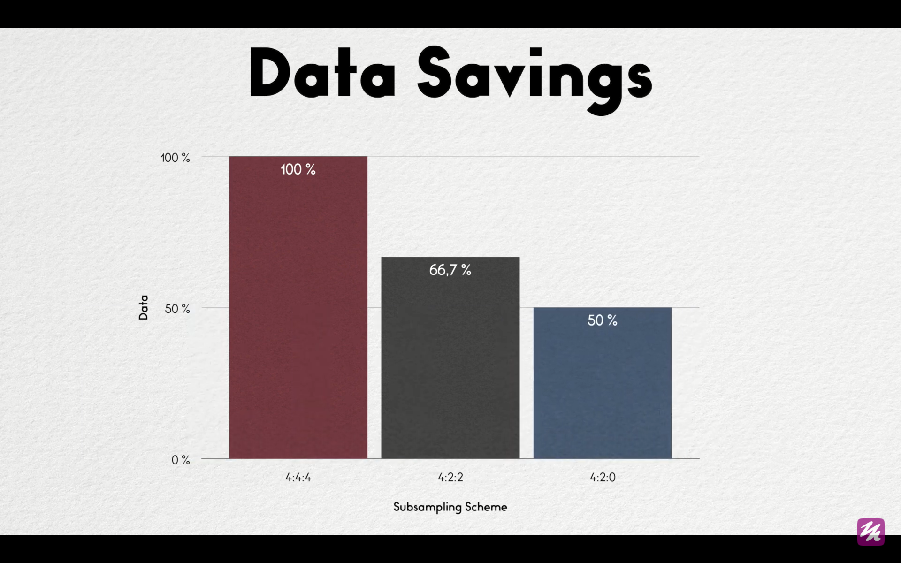

How do computers represent images?
Answer is, Standard color space that computers use is the RGB Model. Every pixel stores 3 values with values ranging from 0-255 (higher values representing larger weights of respective colors).
Each color is represented in 8 bits so total of 24 bits (8*3) per pixel or 3 byte/pixel.
How to calculate the size of an uncompressed image?
Consider an image of 1920 x 1080 format. So total pixels are 1920 x 1080 = 20,73,600 pixels. Now each pixel takes 3 bytes of memory so 20,73,600 pixels takes around (20,73,600 * 3) around 6.2megabytes of storage. Using JPEG compression, one can reduce their image size by 5% of the original size without distorting the original image.
Lossless Compression
In a lossless compression algorithm the data is again restored after decoding. It means the image shown at the end is the same as the original with no loss of data in the process.
Lossy Compression
RGB Colour representation -> Encoder -> .jpg image -> Decoder -> Picture displayed on computer.

(One point to note here is that the final decoded image is not the same as the original uncompressed image.)
JPEG deliberately loses information. That is why this is called lossy compression. To achieve a 5% compression level, we need to lose some information.
YCbCr (Another type of color space)
Y for Y-axis. It measures Luma or brightness of our image.
Cb stands for Chroma blue and Cr for Chroma red. They encode the colors.
JPEG using color space gives us direct access to the part of color that our eyes perceive the best. The idea is to compress the image by sampling CbCr components and keeping all the Y (Luma) components (As human eyes are more sensitive to brightness than color). This technique is known as Chroma Down-sampling/Chroma-SubSampling.
Chroma Downsampling
Main idea is to reduce the size of the image by decreasing CbCr components.
In Chroma DownSampling 4:2:0, consider an 8X8 pixel image, we take 2X2 blocks from it and simply average the group of pixels to get a shared value of the 4 pixels in one pixel. Averaging is the main part of down-sampling.

Chroma Subsampling
It follows the similar procedure as in down-sampling, but instead of averaging the left top most value is the pixel value for the whole 2X2 block.
| Y(Luma Component) | Cb | Cr | |
|---|---|---|---|
| Pixel Count | 64/64(8x8) with no loss | 16/64(grounded in 2x2 pixel) so 64/4 = 16 only 16 pixels remain | 16/64(grouped in 2x2 pixel) so 64/4 = 16 only 16 pixels remain |
| Pixel Ratio | 100 % (no retention) | 25% | 25% |

Final total size of the image as compared to the original = 1/3 + 1/12 + 1/12 = 6/12 (50%) of original. Hence, currently the image size is reduced by half of the original.
Since we talked about 5% of the original image size, here comes the use of DCT (Discrete Cosine Theory).
References taken from:
https://www.baeldung.com/cs/jpeg-compression
Images taken from:
https://www.youtube.com/watch?v=0me3guauqOU
https://www.youtube.com/watch?v=fkz2-JVaYDk